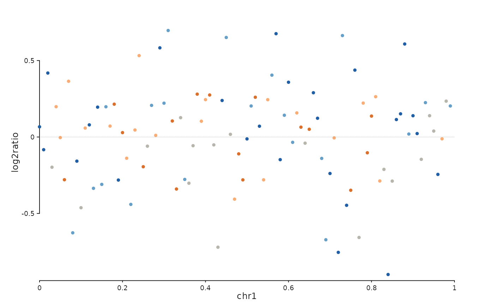

Builds a seq_plot() with one track showing per-bin copy-number data:
a scatter of continuous ratio / log-ratio values, coloured by integer
CN state. Optional dotted reference lines mark integer CN values
present in the data, and an optional segmentation overlay draws a
horizontal line segment for each called segment.
Usage
seq_copynumber(
data,
windows,
cn_col = NULL,
ratio_col = NULL,
state_colors = NULL,
segment_data = NULL,
segment_col = NULL,
show_reference_lines = TRUE,
reference_line_col = "grey50",
track_height = 1,
track_id = NULL,
legend = NULL,
show_legend = TRUE,
...
)Arguments
- data
A
GRangeswith one row per bin and mcols columns for the CN state and the continuous ratio.- windows
A
GRangesof genomic windows defining the view.- cn_col
Name of the mcols column giving integer CN state. Auto- detected when
NULL.- ratio_col
Name of the mcols column giving the continuous ratio / log-ratio. Auto-detected when
NULL.- state_colors
Named character vector keyed by CN state (as a string). Defaults to a diverging blue -> grey -> orange palette.
- segment_data
Optional
GRangesof segmentation calls. Drawn as horizontal line segments over the scatter.- segment_col
Column in
segment_datagiving the per-segment y value (e.g. segment mean). Auto-detected from the same candidates asratio_colwhenNULL.- show_reference_lines
Logical; draw dotted horizontal lines at each integer CN value present in the data range. Default
TRUE.- reference_line_col
Colour for the reference lines.
- track_height
Relative track height.
- track_id
Character
track_idfor the generated track. Defaults to"copynumber".- legend
A
LegendKeyorSeqLegendSpecattached to the scatter element.NULL(default) produces no legend entry.- show_legend
Logical. When
FALSE, the scatter element contributes no legend. DefaultTRUE.- ...
Additional arguments forwarded to
seq_track().
Value
A SeqPlot object composable via %+%, %|%, %__%, and
seq_resolve().
Details
The CN state and ratio column names are auto-detected when not
specified. For CN state the search order is
c("cn", "copy_number", "CN", "state", "integer_cn"); for ratio it
is c("log2ratio", "logR", "log2R", "ratio", "log2_ratio"). When no
match is found the first integer / numeric column is used with a
warning.
Examples
library(GenomicRanges)
gr <- GRanges("chr1", IRanges(seq(1, 1e6, by = 1e4), width = 5000),
cn = sample(0:4, 100, replace = TRUE),
log2ratio = rnorm(100, 0, 0.3))
win <- GRanges("chr1", IRanges(1, 1e6))
seq_copynumber(gr, windows = win)
#> 4 out-of-bounds data points excluded! (seq_segment)
